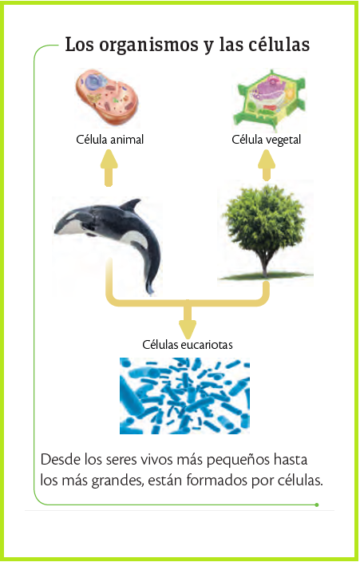
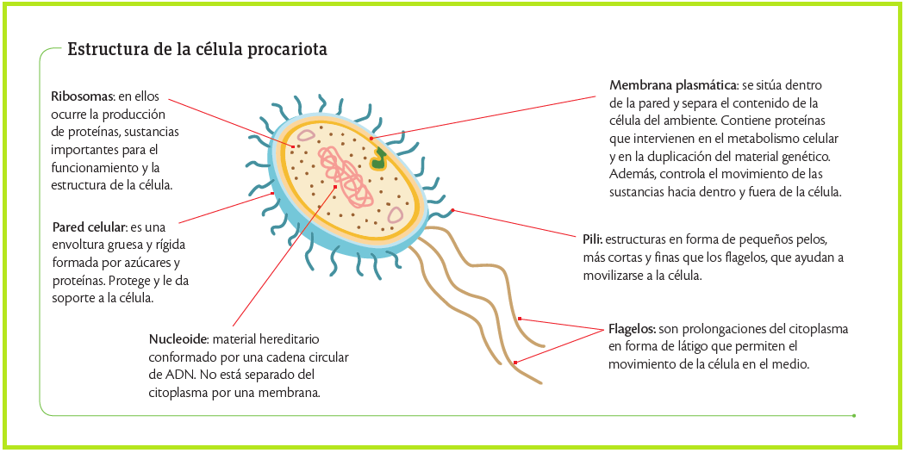
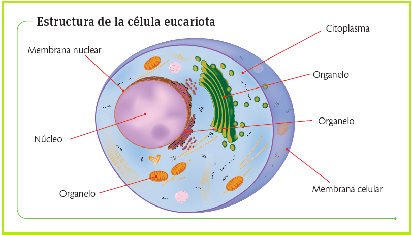
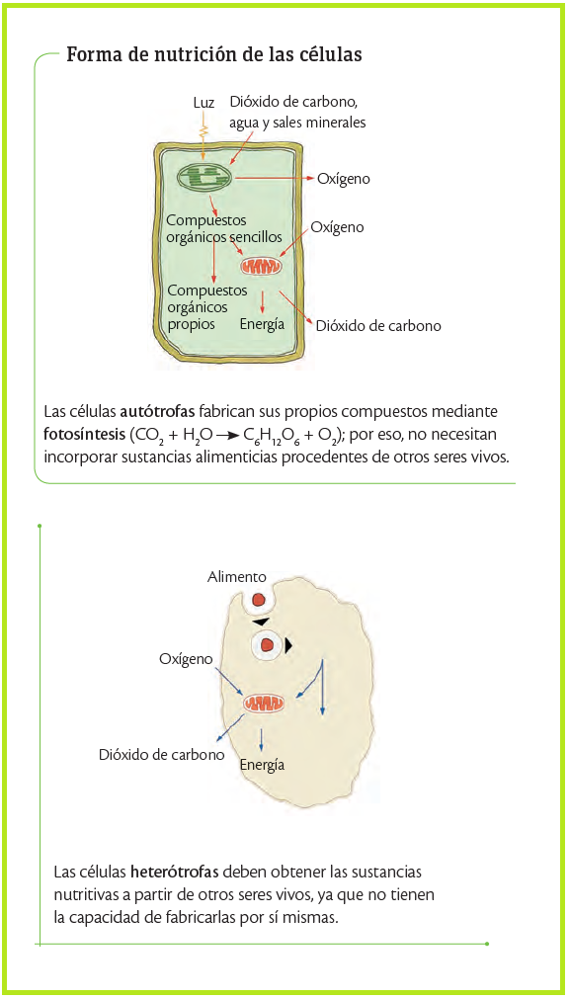
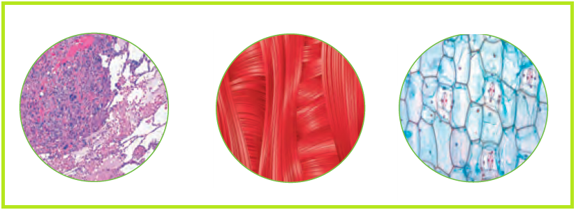
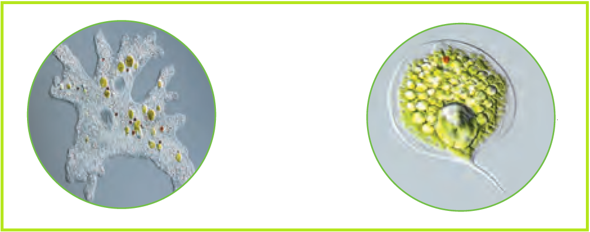

En el siglo XIX y con mejores microscopios, los científicos alemanes Mathias Schleiden (1804-1881), Theodor Schwann (1810-1882) y Rudolf Virchow (1821- 1902) realizaron observaciones interesantes en plantas y animales que los llevaron a establecer la teoría celular; sus conclusiones son:
Todos los organismos, tanto los más simples como los complejos, están formados por una o más células que varían en forma y tamaño.
En el interior de la célula ocurren todas las reacciones necesarias para el mantenimiento de la vida. Las células se especializan para cumplir variadas tareas en el organismo.
La célula es la unidad de origen de los seres vivos. Las nuevas células adquieren la capacidad de cumplir con las mismas funciones de la célula original.

No, existen diferentes células que se clasifican con base en diferentes criterios, por ejemplo, según su tamaño, su complejidad, etc.
Un criterio evolutivo para la clasificación de las células es la presencia o ausencia de núcleo, característica que las divide en dos grandes grupos: las células procariotas y las células eucariotas.
Las células procariotas (bacterias y cianobacterias) aparecieron hace 3 500 millones de años y carecen de núcleo definido u organelos membranosos. Su estructura básica incluye una pared celular, membrana, citoplasma con ribosomas y material genético circular disperso.
Son extremadamente adaptables, pudiendo ser fotosintéticas, descomponedoras, parásitas o sobrevivir en condiciones extremas alimentándose de azufre o metano.

Se cree que las células eucariotas se originaron hace cerca de 1 500 millones de años. Son más grandes que las procariotas, pues tienen una estructura interna más compleja que les permite realizar de forma más eficiente algunos procesos como adquirir nutrientes y eliminar desechos. Las células eucariotas se caracterizan porque tienen su información genética dentro de una membrana nuclear y cuentan con organelos formados por membranas, como las mitocondrias y el retículo endoplasmático, entre otros. Entre estas estructuras internas de la célula se establecen una serie de relaciones que permiten su funcionamiento y continuidad.

Las células necesitan nutrirse, es decir, incorporar sustancias del exterior para fabricar sus propios compuestos y obtener energía para realizar sus funciones. Según la forma de nutrición las células son autótrofas y heterótrofas.

El tamaño de las células está condicionado por las necesidades de alimentación y eliminación de desechos. Así, las células pueden ser microscópicas como las bacterias, y macroscópicas como la yema del huevo de gallina.
La forma de las células es muy variada y depende de condiciones como la tensión superficial, la viscosidad, el citoplasma y la consistencia de la membrana.
Por su forma, las células pueden ser aplanadas, alargadas, poligonales, irregulares y esferoides.
tienen parecido a las baldosas y su función es recubrir los órganos; por esta razón, son abundantes en la piel y en los tejidos de revestimiento interno, como los de los pulmones.
tienen forma de aguja y facilitan las contracciones del tejido muscular y la transmisión del impulso nervioso.
tienen formas geométricas, lo cual disminuye el espacio entre ellas y otorga rigidez y protección a las estructuras de las plantas.

tienen forma irregular que se modifica de acuerdo con las características del medio en donde se encuentren. La ameba es un ejemplo de esta clase de células.
son pequeñas y tienen forma de disco; permanecen en medios líquidos como el agua, la sangre y la savia de las plantas. Algunas algas, protozoos y bacterias también presentan esta forma.
